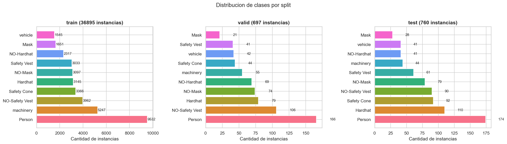
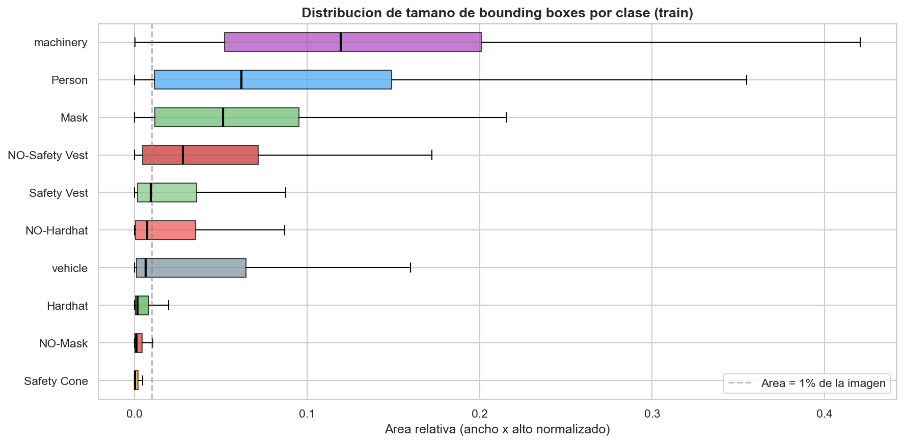
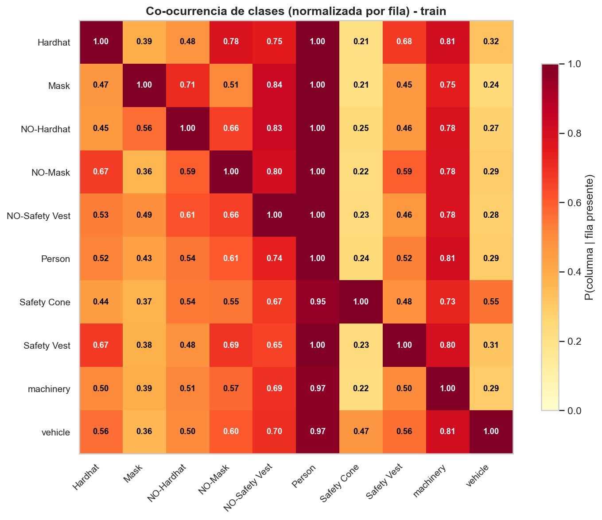
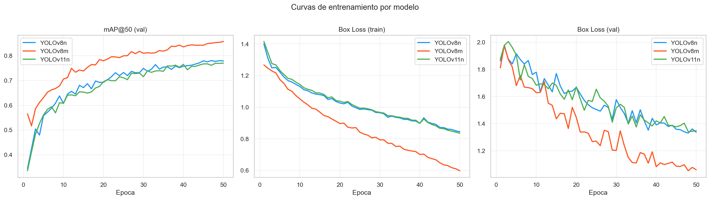
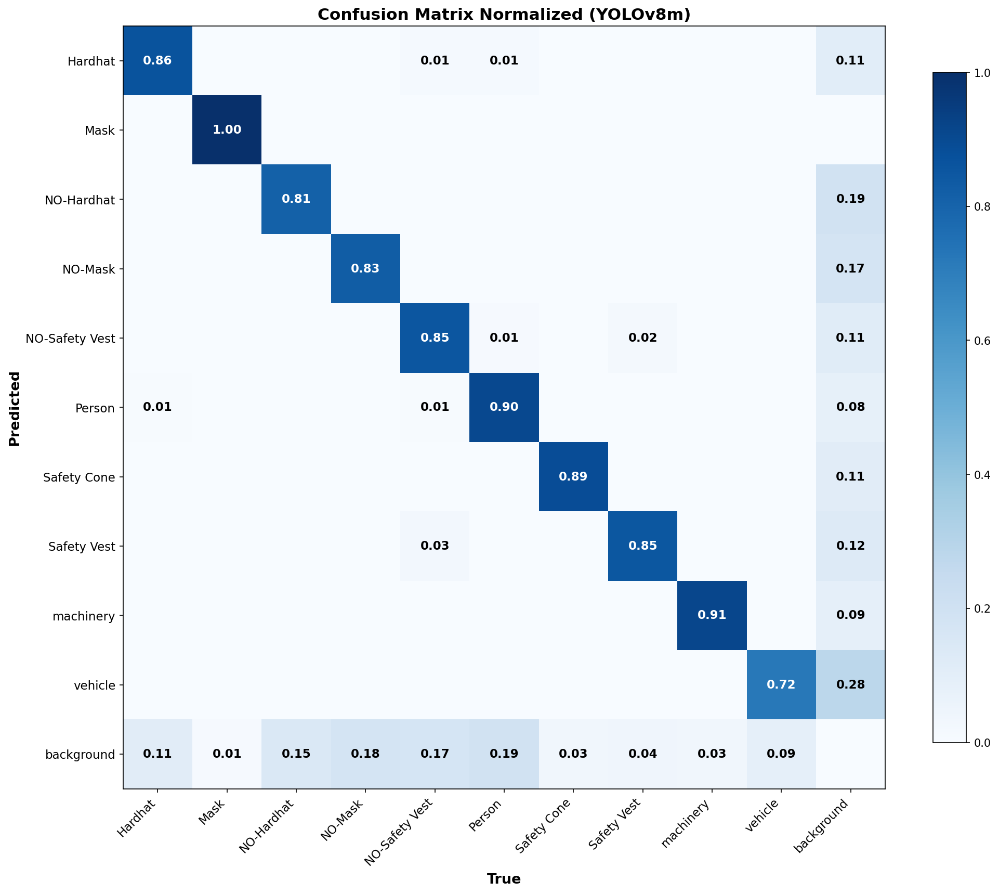
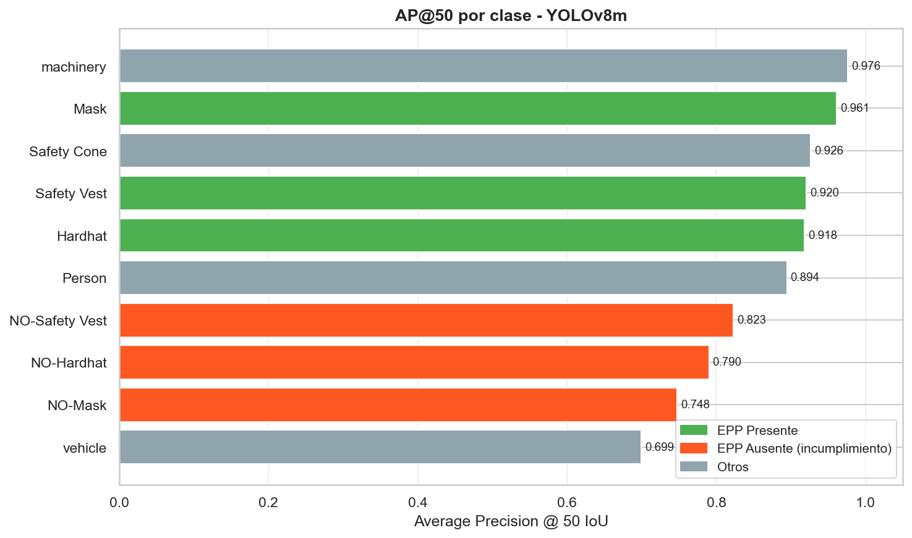

Visión por Computadora II · CEIA · UBA · 2026
Sistema de Monitoreo Automático de EPP en Obras de Construcción
Detección de objetos · Seguimiento multi-objeto · Motor de compliance
Bohórquez, María Gabriela
Ferrari, Maira Daniela
Pardo, Sebastián
Visión por Computadora II · 20 de abril, 2026
Agenda
Estructura de la Exposición
1
🏗️ El Problema — Por qué automatizar la supervisión de EPP
~1 min
2
📦 Dataset — Construction Site Safety (Roboflow, 10 clases)
~1 min
3
⚙️ Arquitectura — YOLO + ByteTrack + Motor de Compliance
~2 min
4
📊 Resultados — Comparación YOLOv8n / v8m / v11n
~2 min
5
🎬 Demo — Sistema en acción sobre obras reales
~2 min
6
✅ Conclusiones
~1 min
Motivación
El Problema
La industria de la construcción tiene una de las tasas más altas de accidentes laborales del mundo. El incumplimiento del uso de EPP es uno de los principales factores de riesgo.
La supervisión tradicional es costosa, intermitente y propensa a errores humanos. No puede cubrir todos los turnos y zonas simultáneamente.
● OIT 2023
El 30% de los accidentes fatales del trabajo ocurren en la construcción.
3
EPP monitoreados
Casco · Chaleco · Mascarilla
Casco · Chaleco · Mascarilla
97+
FPS en CPU
Monitoreo en tiempo real
Monitoreo en tiempo real
24/7
Sin fatiga de supervisores
Monitoreo continuo
Monitoreo continuo
Datos
Dataset: Construction Site Safety
10
clases
~9K
imágenes
11
obj/img
CLASES ANOTADAS
EPP PRESENTE
🪖 Hardhat😷 Mask🦺 Safety Vest
EPP AUSENTE
NO-HardhatNO-MaskNO-Safety Vest
CONTEXTO
PersonSafety Conemachineryvehicle
Desafío clave: el EPP ocupa <2% del área de imagen (Hardhat: mediana 0.19%). Objetos pequeños en escenas densas.
DISTRIBUCIÓN DE CLASES

Distribución de instancias por clase y split (train/val/test)
Análisis Exploratorio
Análisis de Bounding Boxes
TAMAÑO DEL EPP POR CLASE

Los EPP son significativamente más pequeños que Person o machinery
CO-OCURRENCIA DE CLASES

48% de imágenes tienen trabajadores con y sin casco simultáneamente
Sistema
Arquitectura del Pipeline
🎥
VIDEO
Frame a frame
→
🔍
YOLO
Detección EPP
v8n / v8m / v11n
v8n / v8m / v11n
→
🔗
BYTETRACK
Track ID
persistente
persistente
→
📊
COMPLIANCE
3 estados por EPP
Ventana deslizante
Ventana deslizante
→
🚨
ALERTAS
Tiempo real
por Track ID
por Track ID
¿POR QUÉ BYTETRACK?
A diferencia de SORT, ByteTrack asocia detecciones de baja confianza ("bytes"), recuperando trabajadores parcialmente ocluidos. Crucial en obras con múltiples personas.
¿POR QUÉ YOLO Y NO FASTER R-CNN?
Pipeline de una sola etapa: 97–120 FPS en CPU. Faster R-CNN opera a 5–10 FPS. Para monitoreo continuo de video, el throughput es crítico.
Contribución Principal
Motor de Compliance: Lógica de Tres Estados
✓ CUMPLE
EPP detectado
El modelo detectó el EPP presente en este frame.
✗ NO CUMPLE
Violación confirmada
El modelo detectó clase NO-X (ausencia explícita).
? SIN DATO
Indeterminado
Oclusión, distancia o ángulo: el detector no pudo decidir.
EVALUACIÓN POR EPP INDEPENDIENTE
Cada EPP (casco, chaleco, mascarilla) tiene su propio historial por Track ID. Un frame donde el casco está ocluido no penaliza la evaluación del chaleco.
💡 RESULTADO CLAVE
Video "EPP completo": compliance pasó de 61% (por frame) a 100% (por EPP). El sistema refleja correctamente la realidad.
Entrenamiento
Fine-tuning de los 3 Modelos YOLO
MODELOS ENTRENADOS
YOLOv8n 3.2M params — optimizado para velocidad
YOLOv8m 25.9M params — balance precisión/velocidad
YOLOv11n 2.6M params — arquitectura más reciente
CONFIGURACIÓN
Transfer learning desde pesos COCO · Resolución 640×640px · Entrenamiento en Google Colab (GPU)
CURVAS DE ENTRENAMIENTO

Los tres modelos convergen correctamente sin overfitting evidente
Resultados
Comparación de Arquitecturas YOLO
| Modelo | Params | mAP50 ↑ | mAP50-95 ↑ | Precision ↑ | Recall ↑ | Latencia ↓ | FPS ↑ |
|---|---|---|---|---|---|---|---|
| YOLOv8n | 3.2M | 0.777 | 0.476 | 0.896 | 0.685 | 8.3ms | 119.9 |
| YOLOv8m ★ | 25.9M | 0.858 | 0.580 | 0.936 | 0.787 | 10.3ms | 97.4 |
| YOLOv11n | 2.6M | 0.769 | 0.461 | 0.888 | 0.698 | 10.3ms | 97.2 |
YOLOv8m — Mejor precisión
Recomendado para máximo mAP con recursos disponibles.
YOLOv8n — Mejor velocidad
120 FPS en CPU. Ideal para dispositivos edge.
YOLOv11n — Hallazgo
Menos params que v8n pero no supera su mAP en este dominio.
Análisis
Detección por Clase (YOLOv8m)
MATRIZ DE CONFUSIÓN

Pérdida de 11–19% en clases NO-X hacia background: detectar ausencia es más difícil
AP POR CLASE

Average Precision por clase — YOLOv8m
Las clases NO-X presentan el mayor desafío porque no representan objetos físicos sino ausencias. Por esto el estado SIN_DATO es esencial.
Demo en Video
Sistema en Acción — Obras Reales

▶
Modelo: YOLOv8m
Tracker: ByteTrack
Duración: 2 min
Escenas: 5 videos reales
EPP supervisados: Casco + Chaleco
🎬 Reproducir:
videos/demo_2min.mp4
— Cada Track ID tiene color único · Bounding boxes rojos = sin EPP confirmado · Panel de compliance en tiempo real
Evaluación
Resultados en 5 Videos de Obra Real
ESCENA
FRAMES
TRACKS
ALERTAS
COMPLIANCE
🏗️ Vista general de obra
607
49
78
63.1%
🚜 Trabajadores con maquinaria
456
10
8
42.4%
🌤️ Construcción al aire libre
447
10
8
53.6%
🤝 Colaboración en obra
235
8
8
74.5%
✅ Trabajadores con EPP completo
201
5
3*
100%
* Las 3 alertas en "EPP completo" son de tracks efímeros al inicio del video, antes de que la ventana deslizante acumule datos. Con EPP confirmado, el estado se corrige automáticamente.
Conclusiones
5 Conclusiones Principales
1
YOLOv8m obtuvo el mejor rendimiento global: mAP50 de 85.8% y recall de 78.7%, superando a YOLOv8n y YOLOv11n en todas las métricas.
2
YOLOv11n (2.6M params) no supera a YOLOv8n (3.2M) en mAP50 (0.769 vs 0.777): las optimizaciones arquitectónicas de v11 no compensan la reducción de capacidad en este dominio específico.
3
El EPP ocupa menos del 2% del área de imagen (casco: mediana 0.19%). Este es el principal desafío y explica la pérdida de 11–19% de detecciones NO-X hacia background.
4
La evaluación independiente por EPP con tres estados es esencial: el compliance del video EPP completo pasó de 61% (por frame) a 100% (por EPP individual).
5
ByteTrack habilita un sistema de alertas basado en incumplimiento sostenido, reduciendo falsas alarmas por oclusiones momentáneas gracias a las identidades persistentes por Track ID.
🙏
¡Gracias!
Preguntas y comentarios son bienvenidos.
85.8%
mAP50
YOLOv8m
YOLOv8m
97–120
FPS en CPU
5
Videos de obra
evaluados
evaluados
100%
Compliance
EPP completo
EPP completo
📦 github.com/spardo83/computer_vision_2_tp